"Jedino čega se treba plašiti je sam strah" bio je glup savet.
Naravno, ne morate nagomilavati rolne toalet papira – ali ako se oni zaduženi za donošenje odluka plaše straha, oni će podceniti realnost situacije sa ciljem da izbegnu "masovnu paniku". Strah nije problem, već šta radimo sa njim. Strah nam daje snagu da se nosimo sa opasnostima sada i priprema nas za opasnosti kasnije.
Iskreno, mi (Marcel, epidemiologija + Nicky, dizajn/kod) smo zabrinuti. Kladimo se, i vi ste! Zato smo mi usmerili naš strah u pripremanje ovih interaktivnih simulacija, tako da vi možete kanalisati strah u razumevanje:
- Prethodnih nekoliko meseci (uvodni kurs epidemiologije, SEIR model, R i R0)
- Narednih nekoliko meseci (ograničenja kretanja, praćenje kontakata, maske)
- Narednih nekoliko godina (imunitet, vakcinacija)
Ovaj vodič (objavljen prvog maja 2020. godine, vidi ovu fusnotu!→1) za cilj ima da u vama pobudi nadu i strah. Da bismo pobedili COVID-19 na način koji čuva naše mentalno i finansijsko stanje, potreban nam je optimizam za smišljanje planova, ali i pesimizam za smišljanje rezervnih planova. Po rečima Gladis Brovnin Stern: “Optimista izmisli avion, a pesimista padobran.”
Vežite se, polećemo!

Piloti koriste simulatore letenja da nauče kako da ne sruše avione.
Epidemiolozi koriste simulatore epidemija da nauče kako da ne uruše čovečanstvo.
Počećemo od veoma, veoma jednostavnog "epidemiološkog simulatora letenja"! U ovoj simulaciji,
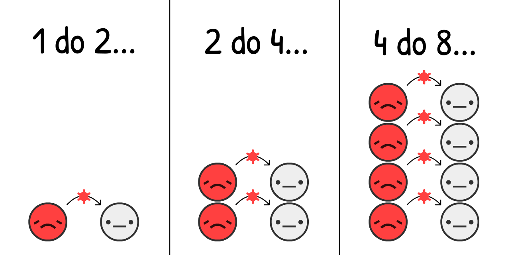
Procenjeno je da se na početku izbijanja COVID-19, virus prenosio sa
Ako simuliramo samo efekat "dupliranja broja slučajeva na svaka 4 dana", u populaciji koja počinje sa samo 0.001%
Pritiskom na "Pokreni" pokreće se simulacija! Možete je puštati ponovo kasnije sa drugačijim parametrima: (tehnički detalji: 3)
Ovo je kriva eksponencijalnog rasta. Počinje malim brojevima, ali brzo eksplodira. Od "a ma to je samo grip" do "zapravo, grip ne uzrokuje masovne grobnice u razvijenim gradovima".
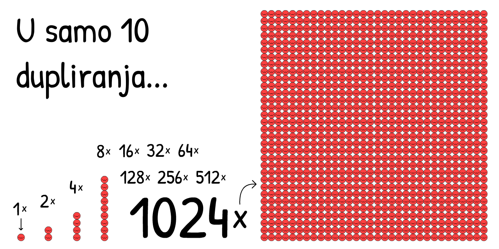
Međutim, ova simulacija je pogrešna. Eksponencijalni rast, na svu sreću, ne dešava se u nedogled. Jedna stvar koja zaustavlja širenje virusa su ljudi koji već imaju virus:
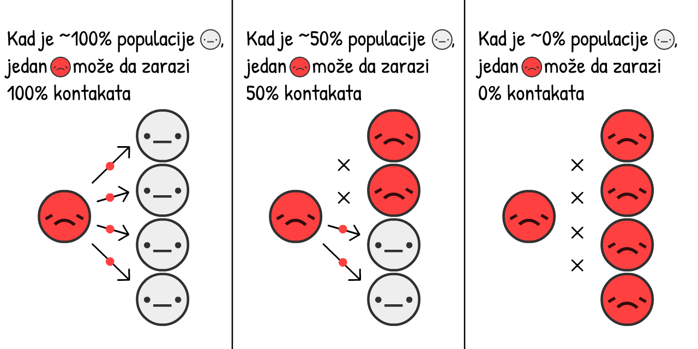
Što je više zaraznih
Kako ovo menja rast zaraznih tokom epidemije? Otkrijmo:
Ovo je "S-kriva" ili kriva logističkog rasta. Počinje malim brojevima, zatim eksplodira, a onda usporava.
Ali, ova simulacija je i dalje pogrešna. Nismo iskoristili činjenicu da zarazni
Zarad pojednostavljenja, hajde da pretpostavimo da svi
U slučaju COVID-19, procenjeno je da su
Ovo je suprotno od eksponencijalnog rasta, ovo je kriva eksponencijalnog opadanja.
Šta se dešava ako simulirate S krivu logističkog rasta sa oporavljanjem?

Hajde da otkrijemo.
Crvena kriva predstavlja broj aktuelnih slučajeva
Siva kriva je ukupan broj slučajeva (aktuelni + oporavljeni
I otuda poznata kriva! Ovo nije zvonasta kriva (prim. prev. normalna raspodela, Gausova raspodela), nije čak ni "log-normalna" kriva. Ona nema ime. Ali videli ste je zilion puta, i preklinjani ste da je ispeglate.
Ovo je takozvani SIR model 5 (
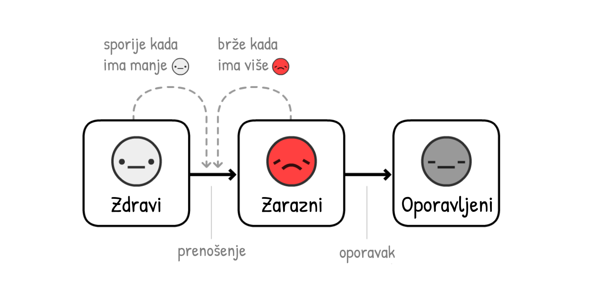
Komentar: Simulacije na osnovu kojih se donose odluke su mnogo sofisticiranije od ovih! Ali SIR model i dalje može da objasni neke generalne trendove, iako mu nedostaju finese.
U stvari, hajde da dodamo jednu finesu: pre nego što
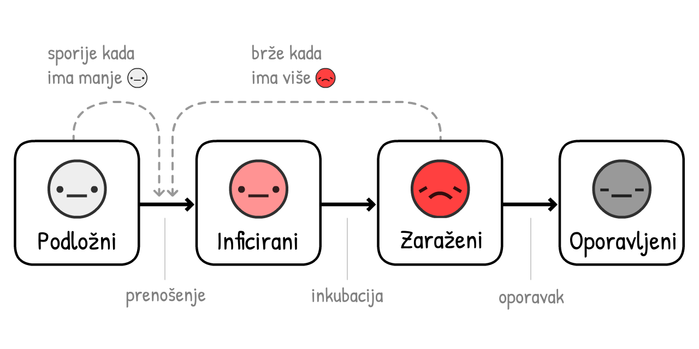
(Ova varijanta modela zove se SEIR model6, gde "E" potiče od
U slučaju COVID-19, procenjeno je da se u stanju
Crvena + Roze kriva su trenutni slučajevi (zarazni
Siva kriva su ukupni slučajevi (trenutni + oporavljeni
Nije se mnogo toga promenilo! Vreme tokom kojeg osoba ostaje
Zašto je to tako? To je zbog prve najvažnije ideje u početnom kursu epidemiologije:

Ovo je skraćeno od "Reproduktivni broj" (eng. Reproduction number). To je prosečan broj ljudi koje
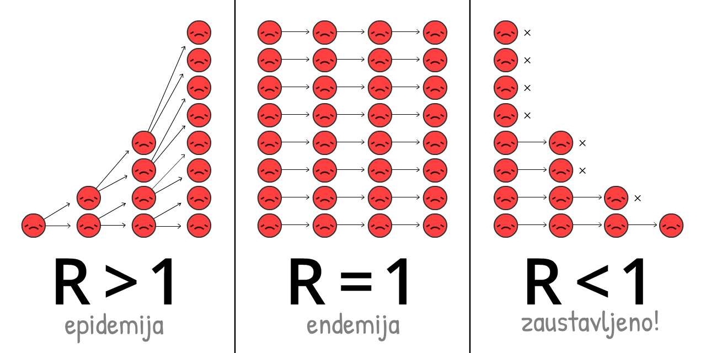
R se menja tokom trajanja epidemije, jer se menja broj imunih i intervencije.
R0 je vrednost R na početku epidemije, pre imuniteta ili intervencija. R0 bliže prikazuje snagu samog virusa, ali se ipak menja u zavisnosti od lokacije. Na primer, R0 je veće u gušće naseljenim gradovima nego u retko naseljenim ruralnim sredinama.
(Većina članaka u novinama – čak i nekim istraživačkim radovima! – mešaju R i R0. Opet, naučna terminologija je loša.)
R0 "tipičnog" sezonskog gripa je oko 1.288. Ovo znači da na početku epidemije gripa, svaki
Procenjena vrednost R0 za COVID-19 je oko 2.2,9 mada jedna još-uvek-nedovršena studija procenjuje da je u Vuhanu vrednost R0 bila 5.7(!).10
U našim simulacijama – na početku i u proseku – u toku 10 dana, svaki
Igrajte se sa računanjem R0 da vidite kako R0 zavisi od vremena potrebnog za oporavak i vremena proteklog do novo-zaraženih:
Ali zapamtite, što je manje
Kada je dovoljan broj ljudi imun, tada je R < 1 i virus je zauzdan! Ovo se naziva imunitet krda. Za viruse gripa, imunitet krda se dostiže vakcinisanjem. Pokušaj da se dostigne "prirodan imunitet krda" izlažući ljude zarazi je užasna ideja. (Ali ne zbog razloga koji vam možda padaju na pamet! Objasnićemo kasnije.)
A sada, poigrajmo se sa SEIR modelom ponovo, ali prikazujući kako se vrednosti R0 i R menjaju tokom vremena, kao i granični broj zaraženih kada je imunitet krda dostignut:
Obratite pažnju: Ukupan broj slučajeva ne staje sa rastom kada se dostigne broj zaraženih potrebnih za imuniteta krda, već ga premašuje! I taj broj je premašen tačno u trenutku kada broj trenutnih slučajeva dostiže svoj maksimum. (Ovo se dešava nezavisno od toga kako promenite parametre – probajte!)
Ovo se dešava zato što u trenutku kada broj ne-
Ako ćete iz ovog čitanja usvojiti samo jednu pouku, neka to bude poruka na sledećem dijagramu – u pitanju je izuzetno kompleksan dijagram, temeljno ga analizirajte da ga u potpunosti savladate:
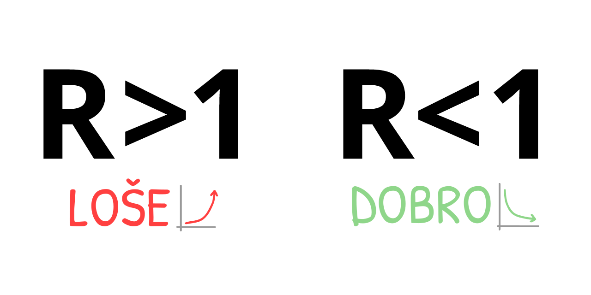
Ovo znači: NE moramo da zauzdamo sva prenošenja virusa, čak ni skoro sva, da bismo zaustavili COVID-19!
Ovo je paradoks. COVID-19 je ekstremno zarazan, ali da ga zauzdamo, potrebno je zaustaviti "samo" 60% prenosa virusa. 60%?! Da je to školska ocena, bila bi neka dvojčica. Ali ako je R0 = 2.5, smanjenjem od 61% dostižemo R = 0.975, koje je manje od 1 i virus je zauzdan! (tačna formula:12)
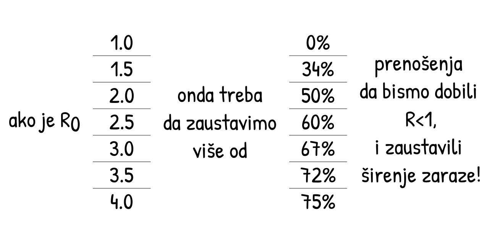
(Ako mislite da je R0 ili bilo koji drugi broj u našim simulacijama premali/prevelik, super je što preispitujete naše pretpostavke! Na kraju ovog vodiča biće još fleksibilnija verzija simulacije u kojoj možete uneti vaše brojeve, i simulirati šta se dešava.)
Sve interevencije protiv COVID-19 o kojima ste čuli – pranje ruku, socijalno/fizičko distanciranje, policijski čas, samoizolacija, praćenje kontakata i karantin, maske, pa čak i "imunitet krda" – sve one rade istu stvar:
Spuštaju vrednost do R < 1.
U nastavku, hajde da iskoristimo naš "epidemiološki simulator letenja" da istražimo: Kako postići R < 1 na način koji štiti našu mentalnu i finansijsku stabilnost?
Pripremite se, prinudno sletanje...
...moglo je da bude gore. Evo paralelnog univerzuma koji smo zaobišli:
Scenario 0: Ne učiniti apsolutno ništa
Otprilike jednoj od 20 osoba inficiranih koronavirusom potrebna je intenzivna nega.13 U bogatim zemljama kao što su SAD, postoji jedno mesto na intenzivnoj nezi na 3400 stanovnika.14 Stoga, bolnički sistem u SAD može da podnese da 20 ljudi na svakih 3400 bude istovremeno zaraženo – ili 0.6% populacije.
Čak i kada bi SAD utrostručili kapacitet intenzivne nege na 2%, ovako bi izgledao slučaj kada se ništa ne preduzme:
Daleko od dobrog.
Ovo je ono što je Izveštaj Imperial Koledža od 16. marta takođe zaključio: ako se ništa ne uradi, popuniće se svi kapaciteti intenzivne nege, dok je preko 80% stanovništva zaraženo. (Setite se: ukupan broj slučajeva je premašio imunitet krda)
Čak i kad bi samo 0.5% zaraženih slučajeva preminulo (vrlo optimistična pretpostavka kad više nema dostupnih mesta na intenzivnoj nezi) u velikim državama kao što su SAD, sa populacijom od 300 miliona, 0.5% od tih 80% inficiranih predstavlja u stvari 1.2 miliona mrtvih... AKO se ne uradi ništa.
(Dosta vesti i medija na društvenim mrežama izveštava da će "80% biti inficirano" bez informacije da je to pod pretpostavkom "DA SE NE URADI NIŠTA". Strah je pretočen u klikove, a ne u razumevanje.)
Scenario 1: Peglanje krive / Imunitet krda
Plan "Peglanje krive" je bio reklamiran od strane svake zvanične javne zdravstvene organizacije, dok je inicijalno pominjani plan u Velikoj Britaniji pod nazivom "imunitet krda" bio sveopšte kritikovan. To su u stvari isti planovi. Samo su u VB plan dosta loše predstavili.15
Oba plana, s' druge strane, imaju jednu bukvalno fatalnu manu.
Prvo, pogledajmo dva osnovna načina kako se ”pegla kriva”: pranje ruku i fizičko distanciranje/udaljavanje.
Češće pranje ruku smanjuje prehlade i grip u bogatim zemljama za ~25%16, dok je zatvaranje celog grada u Londonu smanjilo kontakte za ~70%17. Stoga, hajde da pretpostavimo da pranje ruku smanjuje R za do 25%, a distanciranje do 70%:
Igrajte se sa ovim kalkulatorom da vidite kako % ne-
Hajdemo sad da simuliramo šta bi se dogodilo sa COVID-19 epidemijom, da smo od marta 2020. godine češće prali ruke, ali samo sa blagim fizičkim distanciranjem - tako da se R smanji, ali da je i dalje veće od 1:
Tri napomene:
Ovo smanjuje ukupan broj slučajeva! Čak i da nemamo R < 1, smanjivanje R i dalje spašava živote, jer se time smanjuje i premašivanje broja zaraženih preko broja potrebnog za imunitet krda. Dosta ljudi misli da se "Peglanjem krive" samo vremenski raširi broj slučajeva bez uticaja na ukupan broj. To je nemoguće u svakom osnovnom epidemiološkom modelu. Ali, zbog toga što su na vestima rekli da će "80%+ biti inficirano" kao neizbežnu stvar, ljudi su mislili da će ukupan broj slučajeva prosto biti isti, bez obzira na bilo šta. Netačno.
Zbog dodatnih intervencija, aktuelni slučajevi su dostigli maksimum pre nego što je došlo do imuniteta krda. Zapravo, u ovoj simulaciji, ukupan broj slučajeva tek malo premašuje imunitet krda - što je bio i plan Velike Britanije! U tom trenutku je R < 1, što znači da se može odustati od svih ostalih intervencija, i COVID-19 ostaje zauzdan! Da, ako zanemarimo jedan problem:...
I dalje dolazi do zauzimanja svih kapaciteta na intenzivnoj nezi. Na nekoliko meseci. (I setimo se, već smo uzeli trostruko veći broj realnih kapaciteta u ovim simulacijama.)
To je bio još jedan zaključak Izveštaja Imperial Koledza od 16. marta, koji je ubedio Engleze da odustanu od njihovog početnog plana. Svaki pokušaj u ublažavanju (što je smanjenje R, ali i dalje R > 1) će propasti. Jedini način da se izađe iz ove situacije je suzbijanje (smanjenje R tako da bude R < 1).

To znači, nemoj samo da peglaš krivu, uništi krivu. Na primer, sa...
Scenario 2: Višemesečno zatvaranje (gradova, policijski čas i slično)
Hajde da vidimo šta se dešava ako suzbijemo krivu sa petomesečnim zatvaranjem, smanjimo
Ups.
Ovo je taj "drugi talas" o kojem svi pričaju. Čim prestanemo sa zatvaranjem, opet dolazi do R > 1. Onda, jedan preostali
Zatvaranje nije rešenje, već samo restart situacije.
Dobro, šta to znači, mi sad samo treba da se zatvaramo (ili da uvodimo policijski čas) iznova i iznova?
Scenario 3: Naizmenično Zatvaranje-Otvaranje
Ovo rešenje je prvo bilo predloženo u Izveštaju Imperial Koledža 16. marta, i posle još jednom u jednom radu naučnika sa Harvarda.19
Evo i simulacije: (Pošto se izigrate sa "već nameštenim scenarijom", možete da probate i vaše rasporede zatvaranja gradova/policijskog časa, menjajući vrednosti klizača i dugmiće dok traje simulacija! Setite se da možete da pauzirate i nastavite simulaciju, kao i da promenite njenu brzinu izvršavanja.)
Ovo bi zadržalo ukupan broj slučajeva ispod kapaciteta invenzivne nege! I mnogo je bolje od zatvaranja gradova na 18 meseci, dok vakcina ne postane dostupna. Jedino što mi treba da radimo jeste.. da se zatvorimo na par meseci, otvorimo na par meseci, i ponavljamo ovo u krug dok ne dođemo do vakcine. (Ili u slučaju da nema vakcine, ponavljamo dok ne dostignemo imunitet krda... u 2022. godini.)
U redu, lepo je nacrtati tu liniju koja predstavlja "kapacitet intenzivne nege", ali postoji tu još vrlo bitnih stvari koje mi ne možemo da simuliramo. Na primer:
Mentalno zdravlje: Usamljenost je jedno od najbitnijih faktora rizika za depresiju, anksioznost i samoubistvo. I povezuje se sa preuranjenom smrtnošću u sličnoj meri kao i pušenje 15 cigareta dnevno.20
Finansijsko stanje: "Šta ćemo sa ekonomijom?!" zvuči kao da neko više brine o parama nego o životima, ali "ekonomija" nije samo berza i zarada poslodavaca: to je mogućnost da ljudi zarade za hranu i krov nad glavom za njih i njihove bližnje, da ulažu u budućnost njihove dece, i uživaju u umetnosti, hrani, video igrama - u svim onim stvarima koje čine život lepim i vrednim. I pored toga, siromaštvo samo po sebi ima katastrofalne posledice po mentalno i fizičko zdravlje.
Ali, sad ne kažemo da ne bi trebalo da se zatvaramo opet! Vratićemo se kasnije na to "ciklično" otvaranje i zatvaranje. I dalje je daleko od idealne situacije.
Ali, čekajte. Zar nisu Tajvan i Južna Koreja već zauzdali COVID-19? Na čitava četiri meseca, bez dugoročnog zatvaranja?!
Kako?
Scenario 4: Testiranje, praćenje, izolovanje
"Da, sigurno, mi smo *mogli* da uradimo to što su i Tajvan i Južna Koreja uradili na početku, ali sada je previše kasno za to. Omašili smo početak."
Upravo to! “Zatvaranje nije lek, ali jeste restart”... i novi početak je ono što nam treba.
Da bismo razumeli kako su Tajvan i Južna Koreja zaustavili COVID-19, potrebno je da razumemo tačne vremenske okvire tipične COVID-19 infekcije 21:
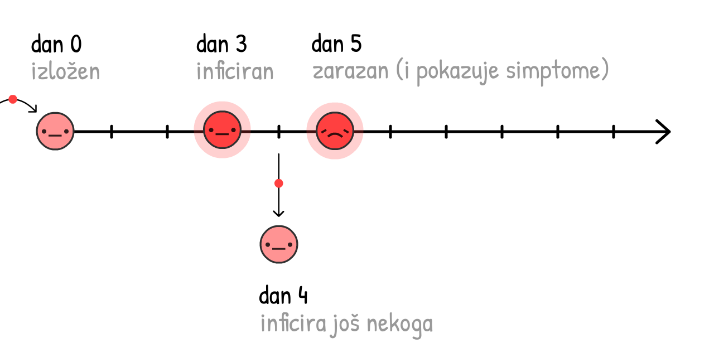
Ako se slučajevi samoizoluju kad shvate da su se razboleli (tj. osete simptome), virus i dalje može da se širi:

I zapravo, 44% svih prenošenja su u stvari: pred-simptomatska! 22
Ali, ako mi prenađemo i stavimo u karantin skorašnje kontakte tog jednog analiziranog slučaja koji ispoljava simptome zaraze... mi zaustavljamo širenje, time što smo jedan korak ispred!

Ovo se zove praćenje kontakata. Ideja je stara, i bila je korišćena u velikoj meri da se zauzda širenje Ebole23, i sada je suština plana kojim su Tajvan i Južna Koreja zauzdali COVID-19!
(Ovim se takođe omogućava i efikasnije korišćenje ograničeno dostupnih testova, za lociranje predsimptomatskih
Tradicionalno, kontakti se prikupljaju prilikom intervjuisanja zaražene osobe, ali to je samo po sebi vrlo sporo za vremenski prozor COVID-19, koji je ~48 sati. Zato ljudima koji sprovode intervjue treba pomoć, kao i podrška, u vidu aplikacija za praćenje kontakata.
(Ova ideja nije potekla od inženjera: korišćenje aplikacije da se suzbije COVID-19 je prvobitno bilo predloženo od strane tima epidemiologa sa Oksforda.)
Čekaj, aplikacije koje prate kontakte?... Da li to znači da se odričemo naše privatnosti, dajući pristup Velikom bratu?
Ni pod razno! DP-3T, tim epidemiologa i kriptografa (u koji je uključen i jedan od nas, Marcel Salathé) već rade na pravljenju takve aplikacije - sa kodom koji je dostupan svima - koja ne otkriva podatke o identitetu, lokaciji, kontaktima, pa čak ni koliko kontakata je osoba imala.
Ovako ona radi:
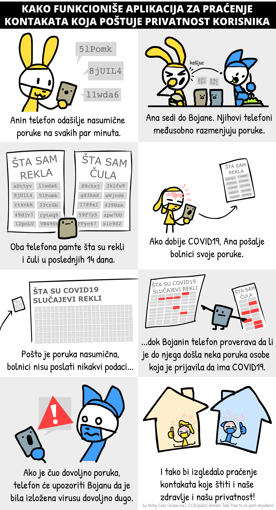
(Ovde je ceo strip. Detalji oko "varanja"/lažno pozitivnih/i ostalo u fusnoti:24)
Pored timova poput TCN Protocol25 i MIT PACT26, i Apple i Google su zainteresovani da se pozabave razvijanjem aplikacije za Android/iOS za praćenje kontakata sa primarnom zaštitom privatnosti.27 (Ne veruješ Google/Apple? Ako! Lepota ovog sistema jeste što mu ne treba tvoje poverenje!) Možda će uskoro tvoj zdravstveni sistem od tebe tražiti da instaliraš neku aplikaciju. Ako je obezbeđena zaštita privatnosti i aplikacija ima javno dostupan kod (open-source), molimo te instaliraj je!
Ali šta je sa ljudima koji nemaju pametne telefone? Ili sa infekcijama koje se dešavaju preko kvaka na vratima? Ili sa "stvarnim" asimptomatskim slučajevima? Aplikacije za praćenje kontakata ne mogu da uhvate baš sva prenošenja... i to je okej! Mi ni ne moramo da ih sve uhvatimo, već samo 60+% da bismo došli do R<1.
(Fusnota o nerviranju oko mešanja termina - između predsimptomatskih i "stvarnih" asimptomatskih slučajeva - "stvarni" asimptomatski su vrlo retki:28)
Izolacija simptomatskih slučajeva bi smanjila R za do 40%, a odlazak u karantin njihovih pred/a-simptomatskih kontakata bi smanjilo R za do 50%29:
Stoga, čak i bez stavljanja u karantin 100% kontakata, možemo da dođemo do R < 1 bez zatvaranja! Ovo je mnogo bolje za naše mentalno zdravlje i finansijsku situaciju. (Što se tiče troškova ljudi koji moraju da se samoizoluju/odu u karantin, vlade bi trebalo da potpomognu - plate za testove, osiguraju njihove poslove, subvencionišu odsustvo, i slično. To je i dalje jeftinije nego zatvaranje čitavih gradova, pa makar i u intervalima.)
Mi bismo onda održavali R < 1 dok ne dođemo do vakcine, što onda podložne
(Komentar: ovaj kalkulator pretpostavlja da je hipotetička vakcina 100% efikasna. Zapamtimo da u realnosti to moramo da kompenzujemo time što se vakciniše više od onoga što je potrebno za "imunitet krda", da bismo zapravo imali taj imunitet krda.)
Dobro, dosta priče. Ovo je simulacija:
- Zatvaranja na nekoliko meseci, dok nismo u stanju da...
- Pređemo na "Testiranje, praćenje, izolovanje", dok ne omogućimo da...
- Vakcinišemo dovoljan broj ljudi, što bi značilo...
- Da smo pobedili.
I to je to! To je način da uspešno izvedemo prinudno sletanje ovog aviona.
I to je način na koji pobeđujemo COVID-19.
...
Ali šta ako stvari i dalje idu po zlu? Stvari su već otišle u vrlo pogrešnu stranu. To je strah, i to je dobro! Strah nam daje snagu da smišljamo rezervne planove.
Pesimista pravi padobran.
Scenario 4+: Maske za sve, leto, ciklično otvaranje i zatvaranje
Šta ako je R0 mnogo veće nego što smo mi mislili, i pored svih intervencija, i blagog distanciranja, mi i dalje ne uspevamo da dobijemo R < 1?
Setimo se, iako ne možemo da dođemo do R < 1, smanjenjem R smanjujemo ukupan broj slučajeva, što znači da spašavamo živote. Ali i dalje, R < 1 je idealno, tako da evo na koje još dodatne načine možemo da utičemo na smanjenje R:
Maske Za Sve:
"Čekaj," možda ćete pitati, "Zar se nije pokazalo da maske ne mogu potpuno da zaštite od zaraze?"
I bili biste u pravu. Maske ne mogu da nas zaštite od infekcije30... one štite druge od nas.
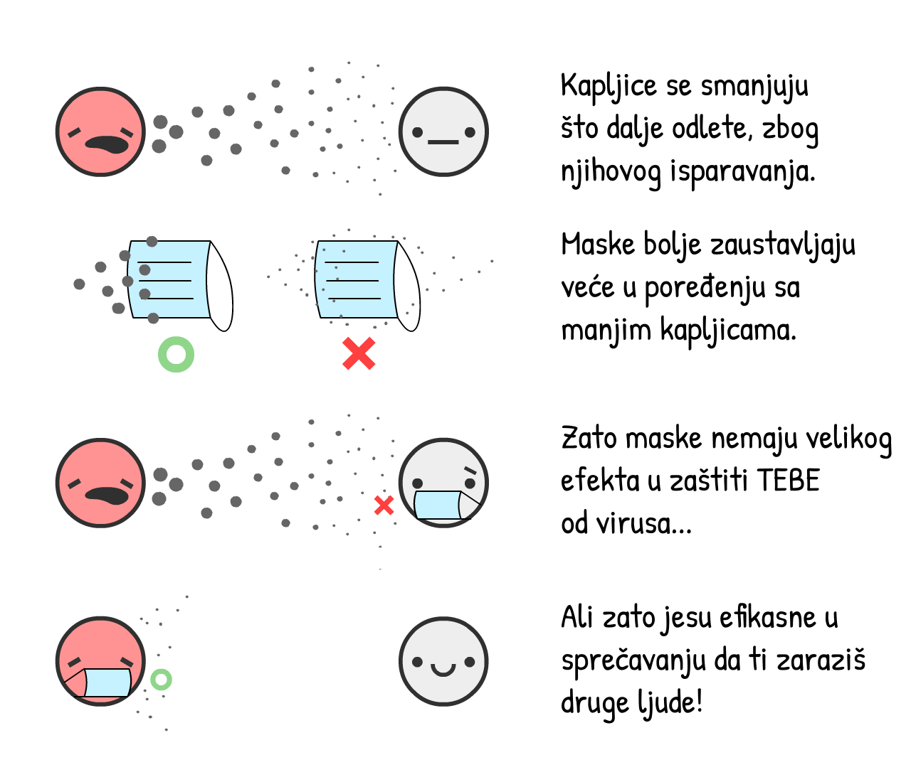
Ako hoćemo da pričamo u brojevima: hirurške maske na inficiranoj osobi smanjuju prisutnost virusa prehlade i gripa u aerosoli za 70%.31 Smanjivanje prenosa za 70% ima sličan efekat kao što ima i zatvaranje gradova!
No svejedno, mi i dalje ne znamo zasigurno koji je uticaj maski na konkretno COVID-19 zarazu. U nauci se objavljuju jedino rezultati ako ste bar 95% sigurni u njih. (...ok, barem bi trebalo da je tako.32) Maske, bar 1. maja 2020, su manje od "95% sigurne".
U svakom slučaju, pandemija je kao poker. Ako se kladite samo kad se 95% sigurni, izgubićete sve što imate. Kao što je skorašnji članak na temu maski u Britanskom medicinskom časopisu primetio, 33 mi moramo da pravimo cost/benefit analize i u nesigurnim vremenima.
Cost: Ako uzmemo ručno pravljene tekstilne maske (koje su ~2/3 efektivne u odnosu na hirurške maske34), to je super jeftino. Ako uzmemo hirurške maske, to je skuplje ali i dalje prilično jeftino.
Benefit: Čak i ako je šansa 50% da hirurške maske smanje prenošenje sa 0% na 70%, "očekivana vrednost" je i dalje 35%, što je kao da smo uveli polu-policijski čas! Stoga, hajde da probamo da procenimo da hirurške maske smanjuju R za 35%, smanjeno da odrazi nesigurnost. (Kao i u prethodnom slučaju, možete da se igrate i vidite kako se menjaju ishodi ako menjate parametre pomeranjem klizača levo-desno.)
(ostali razlozi za/protiv maski:35)
Samo maskama nećemo dostići R < 1. Ali ako pranje ruku i "Testiranje, praćenje, izolovanje" spuste vrednost do R = 1.10, i na to dodamo da samo trećina ljudi nosi maske, dostići ćemo R < 1 i virus je zauzdan!
Leto:
OK, ovo nije "intervencija" koju možemo kontrolisati, ali će pomoći! Neki mediji su izveštavali da leto neće učiniti ništa koronavirusu. Oni su samo delimično u pravu: sâmo leto neće pomoći da se dostigne R < 1, ali hoće umanjiti R.
U slučaju COVID-19, svaki dodatni 1°C snižava R za 1.2%.36 Razlika u stepenima između leta i zime u Njujorku je 26°C,37 tako da će kao posledica letnjih vrelina vrednost R opasti za ~31%. (Prim. prev. )
Leto sâmo po sebi neće učiniti da je R < 1, ali kako imamo ograničene resurse, možemo umanjiti neke od intervencija tokom leta – tako da bismo mogli da ih povećamo tokom zime.
"Ciklično" zatvaranje:
I ako sve to i dalje nije dovoljno da dođemo do R < 1... možemo se ponovo zatvoriti.
Ali nećemo morati da prolazimo kroz ciklus 2 meseca u zatvorenom / 1 mesec na otvorenom iznova i iznova! Kako se R smanjuje, biće nam potreban jedan ili dva "ciklična" zatvaranja pre nego što se pojavi vakcina. (U Singapuru je moralo nedavno da dođe do ovoga, "iako" su uspevali da kontrolišu COVID-19 tokom prethodna 4 meseca. Ovo nije neuspeh: ovo je potrebno za uspeh.)
Evo simulacije "letnjeg" scenarija:
- Zatvaranje, praćeno
- Umerenom količinom politika povećane higijene i "Testiranje, Praćenje, Izolovanje", sa blagom količinom "Maske za sve", a zatim...
- Još jedan "ciklus" zatvaranja pre nego što vakcina postane dostupna.
Da ne pominjemo sve ostale intervencije koje možemmo primeniti da dodatno snizimo R:
- Restrikcije putovanja sa karantinom
- Kontrola temperature u tržnim centrima i školama
- Detaljno čišćenje javnih prostora
- Prelazak na nogovanje umesto rukovanja
- I sve ostalo što će ljudska genijalnost iznedriti
Nadamo se da vam ovi planovi daju nadu.
Čak i u pesimističnom scenariju, moguće je pobediti COVID-19, štiteći našu psihičku i finansijsku stabilnost. Koristeći zatvaranja kao "dugme za reset", čuvajući R < 1 sa izolacijom slučajeva + prateći kontakte uz zaštitu privatnosti + barem platnenim maskama za sve... i život se može vratiti u nešto skoro-normalno!
Sigurno, suve su vam ruke. Ali, imaćete šansu da pozovete simpatiju u prodavnicu stripova! Imaćete šansu da odete sa prijateljima u bioskop i gledate poslednji holivudski blokbaster. Imaćete šansu da posmatrate ljude u biblioteci, uživajući u činjenici da ljudi nastavljaju sa sitnicama koje život znače.
Čak i u najgorem slučaju... život opstaje.
A sada, hajde da planiramo za neke od gorih najgorih scenarija. Sletanje na vodu, pripremite svoje prsluke za spasavanje, i molimo pratite svetla do izlaza u slučaju opasnosti:
Dobili ste COVID-19 i oporavili ste se. Ili, primili ste vakcinu protiv COVID-19. U svakom slučaju, sada ste imuni...
...koliko dugo?
- COVID-19 je najsličniji SARS-u, koji oporavljenima daje dvogodišnji imunitet.38
- Koronavirusi koji prouzrokuju tipičnu prehladu daju vam imunitet od 8 meseci.39
- Postoje neki izveštaji o ljudima koji su se oporavili od COVID-19, pa su posle bili ponovo pozitivni na COVID-19, ali je nejasno da li su ovo u stvari greške testiranja.40
- Jedna još-uvek-nerecenzirana studija na majmunima je pokazala da COVID-19 imunitet traje barem 28 dana.41
Ali u slučaju COVID-19 i ljudima, prvog maja 2020., "koliko dugo" je još uvek velika nepoznanica.
Za ove simulacije, pretpostavimo da imunitet traje jednu godinu. Ova simulacija počinje sa 100%
Povratak eksponencijalnog opadanja!
Ovo je SEIRS model. Drugo "S" u nazivu označava da postoji povratak u
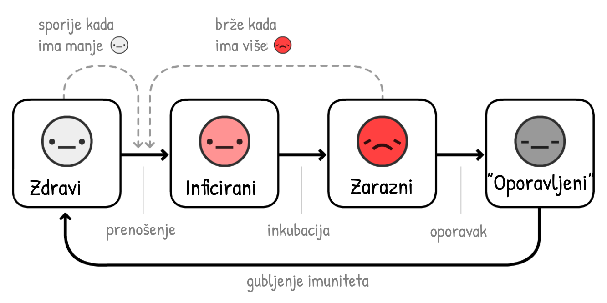
Hajde da simuliramo COVID-19 širenje, tokom 10 godina, bez intervencija... pretpostavljajući da imunitet traje samo godinu dana:
U prethodnim simulacijama imali smo samo jedan maksimum kada smo premašivali kapacitete intenzivne nege. Sada ih ima više, i broj
R = 1, je endemija.
Na sreću, leto smanjuje R, što će poboljšati situaciju:
Ups.
Kontraintuitivno, leto čini da se skokovi u broju slučajeva pogoršavaju i vraćaju! To je zato što leto smanji broj novih
Na sreću, rešenje za ovo je prilično zdravorazumsko – vakcinacija svake jeseni/zime, kao što to radimo sa vakcinama protiv gripa:
(Nakon puštanja snimka, probajte vaše simulacije sa različitim kampanjama vakcinacije! Setite se da možete pauzirati i nastaviti simulaciju u bilo kom trenutku)
Ali imamo i jedno strašnije pitanje:
Šta ako budemo čekali na vakcinu godinama? Ili zauvek?
Da budemo jasni: ovo je skoro neverovatno. Većina epidemiologa očekuje vakcinu za godinu do dve. Tačno je da ne postoji vakcina ni za jedan od koronavirusa, ali to je zato što je SARS bio suzbijen brzo, a vakcina protiv tipične prehlade nije smatrana isplativom investicijom.
Međutim, istraživači zaraznih bolesti su izrazili sledeća strahovanja: Šta ako ne možemo da napravimo dovoljno vakcina?42 Šta ako ubrzamo proces po cenu bezbednosti?43
Čak i u scenariju iz noćne more u kojem nema vakcine, i dalje postoje tri izlaza. Slede od najviše do najmanje strašnih:
1) Ponavljanje ciklusa intervencija za dostizanje R < 1, do postizanja "prirodnog imuniteta krda". (Upozorenje: ovo će rezultirati u velikom broju smrtnih slučajeva i oštećenih pluća. Plus neće raditi ako imunitet ne potraje.)
2) Ponavljanje R < 1 intervencija zauvek. Praćenje kontakata i nošenje maski nam samo prosto postane nova svakodnevnica u post-COVID-19 svetu, kao što su testovi na seksualno prenosive infekcije i korišćenje kondoma postali nova norma u post-HIV svetu.
3) Ponavljanje R < 1 intervencija dok ne razvijemo tretmane koji čine da COVID-19 mnogo ređe zahteva intenzivnu negu. (Što bi svakako trebalo da radimo!) Smanjivanje potreba za intenzivnom negom sa faktorom 10x je isto što i povećanje kapaciteta u intenzivnoj nezi za faktor od 10x:
Evo simulacije bez trajnog imuniteta, bez vakcine, pa čak i bez bilo kakvih intervencija - samo sa sporim povećavanjem spremnosti da preživimo nove talase:
Čak i u ovom najgorem od najgorih slučajeva... život opstaje.
Možda želite da preispitate naše pretpostavke i probate drugačije vrednosti R0 i ostalih parametara. Ili želite da simulirate svoju kombinaciju intervencija!
Ovde je simulacija, u kojoj je menjanje svega dostupno. (skrolovanjem ćete videti sve kontrole) Simulirajte i igrajte se dok ne zadovoljite znatiželju:
Ovaj osnovni "epidemiološki simulator letenja" nas je naučio dosta toga. Dozvolio nam je da odgovorimo na mnoga pitanja o prethodnim mesecima, budućim mesecima i budućim godinama.
Konačno, hajde da se vratimo na...
Avion je potonuo. Uhvatili smo se za čamce za spašavanje. Vreme je da pronađemo kopno.44
Timovi epidemiologa i donosioca odluka (levo, desno, i zajedničkim snagama) došli su do koncenzusa o tome kako pobediti COVID-19, čuvajući naše živote i slobode.
U nastavku je skica ideje, sa nekim (manje-usaglašenim) rezervnim planovima:
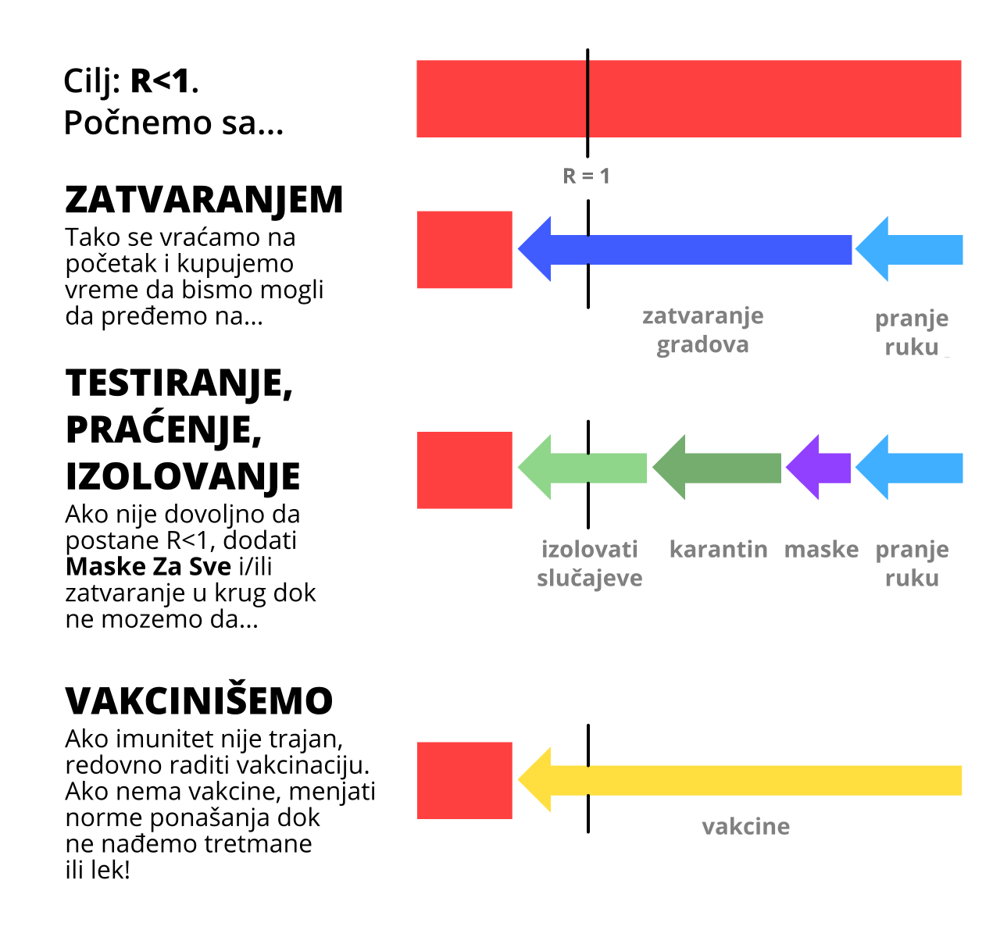
Šta ovo znači za TEBE, sada?
Za sve: Poštuj mere lokalnih i nacionalnih vlasti tako da svi možemo izaći iz Faze I što je pre moguće. Nastavi da pereš ruke. Pravi svoje maske. Preuzmi aplikaciju za praćenje kontakata koja poštuje privatnost kada postane dostupna sledećeg meseca. Ostani zdravo, fizički i mentalno! I piši lokalnim donosiocima odluka da se uozbilje i...
Za donosioce odluka: Donesite zakone da podržite osobe koje moraju da se samoizoluju/koji su u karantinu. Uposlite više osoba da se bave praćenjem kontakata, podržite ih adekvatnim aplikacijama koje prate kontakte i poštuju privatnost. Usmerite više finansija u stvari koje bi trebalo da pravimo, kao što su...
Za stvaraoce: Pravite testove. Pravite respiratore. Pravite opremu za ličnu zaštitu za bolnice. Pravite testove. Pravite maske. Pravite aplikacije. Pravite antivirotike, profilaktike, i ostale lekove i tretmane koji nisu vakcine. Pravite vakcine. Pravite testove. Pravite testove. Pravite testove. Stvarajte nadu.
Ne umanjujte strah da biste probudili nadu. Naš strah treba da se udruži sa nadom, kao što su stvaraoci aviona i padobrana. Pripremanje za strašne budućnosti je takođe i način na koji stvaramo budućnost kojoj se nadamo.
Jedino čega se treba plašiti je ideja da se jedino treba plašiti sâmog straha.
Fusnote će sadržati izvore informacija, linkove i bonus komentare, kao ovaj komentar!
Ovaj vodič je objavljen prvog maja 2020. Mnogi detalji će se menjati ali smo mi uvereni da će ovaj vodič pokriti 95% mogućih budućnosti i da će početni kurs epidemiologije biti zauvek od koristi.↩︎
“Prosečno vreme prenošenja zaraze (eng. serial interval) je 3.96 dana (interval poverenja od 95% je 3.53–4.39 dana)”. Du Z, Xu X, Wu Y, Wang L, Cowling BJ, Ancel Meyers L (Napomena: Preliminarne verzije članaka ne treba uzimati u obzir na isti način kao finalne verzije.)↩︎
Zapamtite: sve ove simulacije su vrlo pojednostavljene u svrhu obrazovanja.
Jedno pojednostavljenje: Kada kažete simulaciji "Inficiraj 1 novu osobu svakih X dana", ona zapravo povećava broj zaraznih za 1/X svakog dana. Slično za buduća podešavanja u ovim simulacijama – "Oporavak svakih X dana" zapravo umanjuje broj zaraznih za 1/X svakog dana.
Ove dve interpretacije nisu u potpunosti iste, ali su dovoljno blizu, i za potrebe obrazovanja učinkovitije su od direktnog uspostavljanja stopa transmisije i oporavka.↩︎
“Medijalna vrednost perioda tokom koga je COVID-19 pozitivna osoba zarazna [...] je 9.5 dana.” Hu, Z., Song, C., Xu, C. et al Da, znamo da "medijalna" vrednost nije isto što i "prosečna vrednost". U cilju ovog pojednostavljenog edukativnog modela mislimo da su ove dve vrednosti dovoljno bliske.↩︎
Za više tehničkih objašnjenja o SIR modelu, vidite Institut za modelovanje bolesti i Vikipediju↩︎
Za više tehničkih objašnjenja o SEIR modelu, pogledajte Institute za modelovanje bolesti i Vikipediju↩︎
“Pretpostavljajući distribuciju perioda inkubacije sa prosečnom vrednošću od 5.2 dana iz druge studije na ranim COVID-19 slučajevima, mi smo zaključili da zaraznost počinje od 2.3 dana (interval sa 95% poverenja 0.8–3.0 dana) pre nego što počnu simptomi” (prevod: Pretpostavljajući da simptomi počinju petog dana, zaraznost počinje dva dana pre = zaraznost počinje tri dana nakon što je osoba inficirana) He, X., Lau, E.H.Y., Wu, P. et al.↩︎
“Medijalna vrednost R za sezonski grip je 1.28 (IQR: 1.19–1.37)” Biggerstaff, M., Cauchemez, S., Reed, C. et al.↩︎
“Procenili smo bazični reproduktivni broj R0 virusa 2019-nCoV na oko 2.2 (interval velike gustine od 90%: 1.4–3.8)” Riou J, Althaus CL.↩︎
“Izračunali smo da medijalna vrednost R0 iznosi 5.7 (interval sa 95% poverenja: 3.8–8.9)” Sanche S, Lin YT, Xu C, Romero-Severson E, Hengartner N, Ke R.↩︎
Ovde smo pretpostavili da je osoba jednako zarazna tokom celog "zaraznog perioda". Opet, pojednostavljenje u službi obrazovanja.↩︎
Setite se da je R = R0 * udeo zaraza koje se i dalje mogu odvijati. I još se setite da je ovaj udeo zaraza koje i dalje mogu da se odvijaju = 1 - udeo zaraza koje su zaustavljene.
Stoga, da bismo dostigli R < 1, potrebno je R0 * MogućeZaraze < 1.
Stoga, MogućeZaraze < 1/R0
Stoga, 1 - ZaustavljeneZaraze < 1/R0
Stoga, ZaustavljeneZaraze > 1 - 1/R0
Stoga, potreno je zastaviti više od 1 - 1/R0 prenosa zaraze da bi R < 1 i zauzdali virus!↩︎
"Procenat COVID-19 slučajeva u Sjedinjenim Američkim Državama od 12. februara do 16. marta 2020. godine kojima je bila potrebna intenzivna nega, grupisano po starosti". Između 4.9% i 11.5% od svih COVID-19 slučajeva zahtevalo je intenzivnu negu. Velikodušno smo odabrali minimalnu vrednost, tj. 5%, odnosno 1 od 20. Obratite pažnju da je ova vrednost specifična u odnosu na starosnu strukturu Sjedinjenih Američkih Država, i može biti veća za države sa starijom populacijom, ili manja za države sa mlađom populacijom.↩︎
“Broj mesta na intenzivnoj nezi = 96,596”. Izvor the Society of Critical Care Medicine Broj stanovnika u SAD bio je 328,200,000 u 2019. godini, stoga 96,596 naspram 328,200,000 = približno je 1 na 3400.↩︎
“On kaže da je cilj isti kao u drugim zemljama: peglanje krive time što se poljulja/uzdrma/razvuče početak infekcije. Posledično, narod će postići imunitet krda; to je sporedni efekat, a ne cilj. [...] Zvaničan plan akcije vlasti u vezi sa koronavirusom, dostupan na njihovom sajtu, uopšte nije pominjao imunitet krda.”
“U svih osam dostupnih istraživanja su zaključili da pranje ruku smanjuje rizik od infekcija respiratornog sistema, sa smanjenjem rizika u intervalu od 6% do 44% [zbirna srednja vrednost je 24%, interval od 95% poverenja je 6–40%].” Mi smo zaokružili srednju vrednost na 25% u ovim simulacijama radi jednostavnosti. Rabie, T. and Curtis, V. Napomena: kako ova meta-analiza pokazuje, kvalitet istraživanja na temu pranja ruku (bar u bogatijim zemljama) su grozna.↩︎
“Primećeno je da postoji 73% smanjenja u prosečnom broju kontakata po učesniku. Ovo bi bilo dovoljno da smanji R0 sa 2.6, vrednosti koju je imalo pre zatvaranja grada/policijskog časa), na 0.62 (0.37 - 0.89) tokom zatvaranja grada”. Mi smo ovo zaokružili na 70% u ovim simulacijima radi jednostavnosti. Jarvis and Zandvoort et al↩︎
Ova naizgled nelogičnost ne bi postojala kad bismo predstavili R na logaritamskoj skali... ali onda bismo morali da objasnimo šta je logaritamska skala.↩︎
“Ako ne uzmemo u obzir ostale intervencije, glavni parametar uspešnosti sprovođenja mera fizičkog distanciranja je da li su popunjeni svi kapaciteti intenzivnih nega. Da bi se ovo izbeglo, produžena ili pak naizmenična fizička distanciranja su potencijalno neophodna i do 2022 godine.” Kissler and Tedijanto et al↩︎
Pogledajte Sliku 6 iz Holt-Lunstad i Smith 2010. Naravno, obratimo pažnju da su uočili korelaciju. Ali, sem ako ne želimo da nasumično ljude stavljamo u izolaciju da bismo istraživali usamljenost, jedino što imamo su prosto podaci sa posmatranja kao što je ovo.↩︎
3 dana u proseku za infektivnost: “Pretpostavljajući da je inkubacioni period normalna distribucija oko srednje vrednosti 5.2 dana (iz drugog istraživanja COVID-19 slučajeva), zaključujemo da infektivnost počinje vec od 2.3 dana (interval 95% poverenja je 0.8–3.0 dana) pre nego što se manifestuju simptomi” (u prevodu: Ako pretpostavimo da se simptomi vide od petog dana, zaraznost je počela dva dana pre, tj. počinje od treceg dana) He, X., Lau, E.H.Y., Wu, P. et al.
4 dana u proseku da se zarazi druga osoba: “Usrednjen [serial] interval je bio 3.96 dana (interval 95% poverenja 3.53–4.39 dana)” Du Z, Xu X, Wu Y, Wang L, Cowling BJ, Ancel Meyers L
5 dana u proseku da se ispolje simptomi: “Medijana distribucije inkubacionog perioda je procenjena da je 5.1 dan (interval 95% poverenja 4.5 do 5.8 dana)” Lauer SA, Grantz KH, Bi Q, et al↩︎
“Mi smo procenili da su 44% (interval 95% poverenja je 25–69%) sekundarnih slučajeva bili zaraženi tokom predsimptomatskog perioda za dati slučaj.” He, X., Lau, E.H.Y., Wu, P. et al↩︎
“Praćenje kontakata je bilo od suštinske važnosti u Liberiji i predstavlja jednu od najvećih napora i akcija za praćenje kontakata tokom svih epidemija u istoriji.” Swanson KC, Altare C, Wesseh CS, et al.↩︎
Da bi se onemogućilo "varanje" (ljudi koji lažno tvrde da su zaraženi), DP-3T Protokol zahteva da ti bolnica prvo da jednokratnu šifru, što tebi dozvoljava da ustupiš bolnici sve tvoje poruke.
Lažno pozitivni su problem u oba slučaja - i u ručnom i u automatskom praćenju kontakata. Mada, i dalje možemo smanjiti broj lažno pozitivnih na dva načina: 1) time što bismo obavestili sve Bojane tek ako su čule, recimo, više od 30 min poruka, a ne samo jednu poruku u prolazu; 2) Ako aplikacija misli da Bojana jeste bila izložena virusu, može da savetuje Bojani da ode na intervju u bolnicu.
Za ostala pitanja kao što je potrošnja internet protoka, integritet izvora, i ostala pitanja u vezi sa bezbednošću podataka, pogledajte open-source DP-3T predloge/whitepapers!↩︎
Temporary Contact Numbers, a decentralized, privacy-first contact tracing protocol↩︎
Apple i Google partneri za tehnologiju praćenja kontakata COVID-19. Primetite da ih oni ne prave sami, već da samo prave sistem koji će moći da podrži ovakve aplikacije.↩︎
Veliki broj novih izveštaja - i iskreni da budemo, dosta istraživačkih radova - ne razlikuje "slučajeve koji ne pokazuju simptome kad ih testiraju" (predsimptomastki slučajevi) i "slučajeve koji ne pokazuju simptome nikada" (stvarni asimptomatski). Jedini način na koji oni mogu da se razdvoje je da se radi ponovno testiranje posle nekog vremena.
Šta je šta - ovo istraživanje je uradilo. (Obratite pažnju: "Rano objavljivanje radova se ne smatra finalnim verzijama.") U kol-centru u Južnoj Koreji koja je imala izbijanje COVID-19 bolesti, "samo 4 slučaja (1.9%) su ostali asimptomatski u toku 14 dana karantina, i niko od njihovih ukućana nije imao sekundarnu infekciju."
To znači da su "stvarni asimptomatski" slučajevi stvarno retki, a da vas zaraze takvi je još ređe.↩︎
Iz istog istraživanja sa Oksforda koje je prvo predložilo aplikacije za suzbijanje COVID-19 bolesti: Luca Ferretti i Chris Wymant et al Pogledajte Sliku 2. Pretpostavljajući R0 = 2.0, oni su zaključili da:
- Simptomatični doprinose R = 0.8 (40%)
- Predsimptomatični doprinose R = 0.9 (45%)
- Asimptomatični doprinose R = 0.1 (5%, iako njihov model ima neke nesigurnosti i moglo bi da bude i dosta manji broj u pitanju)
- Stvari u okolini kao što su kvake na vratima doprinose R = 0.2 (10%)
I ako saberemo pred- i a-simptomatične kontakte (45% + 5%) dobijamo 50% od R!↩︎
“Nijedna od ovih hirurških maski nema adekvatan učinak filtera, kao što ni ne prijanjaju licu u dovoljnoj meri, da bi se mogle klasifikovati kao respiratorna zaštita.” Tara Oberg i Lisa M. Brosseau↩︎
“Ukupno smanjenje od 3.4 puta [70% smanjenja] u broju čestica aerosoli koje je primećeno, zajedno sa skoro potpunom eliminacijom velikih kapljica koje je demonstrirano od strane by Johnson et al., sugeriše da bi nošenje hirurške maske od strane zaraženog lica imalo klinički značajan uticaj na prenošenje zaraze.” Milton DK, Fabian MP, Cowling BJ, Grantham ML, McDevitt JJ↩︎
Svi pravi naučnici koji su pročitali poslednju rečenicu su se upravo sarkastično nasmejali. Pogledajte: p-hacking, kriza repreducibilnosti)↩︎
“Vreme je da primenimo princip predostrožnosti” Trisha Greenhalgh et al [PDF]↩︎
Davies, A., Thompson, K., Giri, K., Kafatos, G., Walker, J., i Bennett, A Pogledajte Tabelu 1: 100% pamučna majica ima oko 2/3 efikasnost filtriranja u poređenju sa hirurškom maskom, za dve vrste testiranih bakterijskih aerosoli.↩︎
"Mi moramo da čuvamo zalihe za bolnice." Apsolutno se slažem. Ali to je u stvari argument za povećanje proizvodnje maski, a ne čuvanja za rezerve. U međuvremenu, možemo da pravimo tekstilne maske.
"Teško je da se pravilno nose." Takođe je teško da se peru ruke u skladu sa preporukama Svetske Zdravstvene Organizacije - ozbiljno, "Korak 3) desni dlan preko levog dorsuma"?!?!?! – ali mi i dalje preporučujemo pranje ruku, jer nesavršeno je i dalje bolje nego ništa.
"Ljudi će postati opušteniji sa pranjem ruku i fizičkim distanciranjem." Naravno, i pojasevi za vezivanje čine da ljudi počnu da ignorišu stop znak, i konac za zube čini da ljudi jedu kamenje. Za ozbiljno, mi bismo zapravo to koristili kao kontra-argument - maske su ljudima konstantni podsetnik da treba da budu pažljivi - a uzgred, u Istočnoj Aziji maske su takođe i simbol solidarnosti!↩︎
“Povećanje temperature za jedan stepen Celzijusove skale [...] smanjuje R za 0.0225” i “Prosečna vrednost R za ovih 100 gradova je 1.83”. 0.0225 ÷ 1.83 = ~1.2%. Wang, Jingyuan i Tang, Ke and Feng, Kai and Lv, Weifeng↩︎
Tokom 2019. godine u Centralnom parku, tokom najtoplijeg meseca (Jul) bilo je 79.6°F, a tokom najhladnijeg meseca (Januar) bilo je 32.5°F. Razlika je 47.1°F, odnosno ~26°C. PDF sa Weather.gov↩︎
“SARS antitela su održana u proseku 2 godine [...] Stoga, SARS pacijenti mogu ponovo postati podložni infekciji ≥3 godine nakon inicijalne infekcije.” Wu LP, Wang NC, Chang YH, et al. "Nažalost" nikad nećemo saznati koliko dugo bi SARS imunitet trajao, s obzirom da je suzbijen tako brzo.↩︎
“Nismo pronašli značajnu razliku između verovatnoće pozitivnog testa bar jednom i verovatnoće povratka beta-koronavirusa HKU1 i OC43 nakon 34 nedelje posle priključivanja studiji/prve infekcije.” Marta Galanti i Jeffrey Shaman (PDF)↩︎
“Jednom kada osoba pobedi virus, delovi virusa opstaju još neko vreme. Oni ne mogu izazvati infekciju, ali mogu izazvati pozitivan ishod na testu.” iz STAT News od Andrew Joseph↩︎
Iz Bao et al. Napomena: Ovaj članak još uvek nije prošao recenziju. Takođe, da istaknemo: oni su jedino re-testirali nakon 28 dana.↩︎
“Ako stigne vakcina protiv koronavirusa, da li svet može da ih napravi dovoljno?” autorka Roxanne Khamsi, u časopisu Nature↩︎
“Ne žurite sa pravljenjem COVID-19 vakcina i lekova bez dovoljno čvrstih garancija o njihovoj bezbednosti” autor Shibo Jiang, u časopisu Nature↩︎
Metafora kopna iz članka autora Marc Lipsitch i Yonatan Grad, u STAT News↩︎
 JAVNO VLASNIŠTVO
To znači da ti već imaš dozvolu da ovaj materijal koristiš & menjaš bilo koji deo vizuelizacija/koda/reči na ovoj stranici - na blogu, sajtovima vesti, učionici, bilo gde!
JAVNO VLASNIŠTVO
To znači da ti već imaš dozvolu da ovaj materijal koristiš & menjaš bilo koji deo vizuelizacija/koda/reči na ovoj stranici - na blogu, sajtovima vesti, učionici, bilo gde!